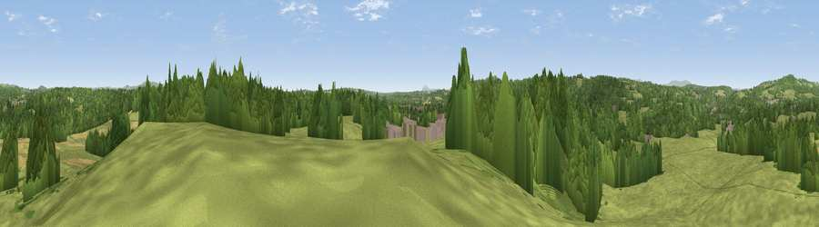

Viewpoint near Birchen Coppice
#28414 in England · top 61% of its area beats it · near Birchen CoppiceThe view, rendered

A 360° render of this exact spot computed from the terrain model, tree cover and land cover — summer colours, afternoon light, calibrated against photographs of famous viewpoints. Real trees, hedges and buildings will differ in detail.
The panorama
Grey silhouette: terrain skyline in each direction (720 bearings, Earth curvature and refraction included). Dashed green: skyline with trees (+15 m) and buildings (+8 m) as obstacles. Blue strip: how far the ground is visible on each bearing.
Where the view opens
Wedge length = distance to the farthest visible ground on that bearing (vegetation-aware). Rings at 10, 25 and 50 km.
What fills the view
50% grassland · 41% woodland · 5% cropland · 3% built-up
Angular shares of the visible panorama (visual magnitude), not map area. Landscape diversity 0.43 (0–1 Shannon).
Key numbers
More beautiful places nearby
The staircase of upgrades: each row has a higher view potential than everything closer. Driving times are estimates from straight-line distance, calibrated against real road routing — check an actual route before setting out.
| Place | Direction | Drive | Score |
|---|---|---|---|
| Stagborough Hill | SW · 2 km | ~6 min | 63.8 |
| Viewpoint near Ferndale | NNW · 4 km | ~9 min | 71.7 |
| Viewpoint near Abberley | SSW · 8 km | ~16 min | 77.5 |
| Viewpoint near Abberley | SW · 8 km | ~17 min | 78.1 |
| Abberley Hill | SW · 8 km | ~17 min | 80.4 |
| Viewpoint near Great Witley | SSW · 11 km | ~21 min | 83.4 |
| Titterstone Clee | W · 21 km | ~36 min | 83.8 |
| North Hill | S · 28 km | ~44 min | 86.8 |
52.36257, -2.29109 · source: screening · position refined by local search. Computed location — check access rights before visiting.